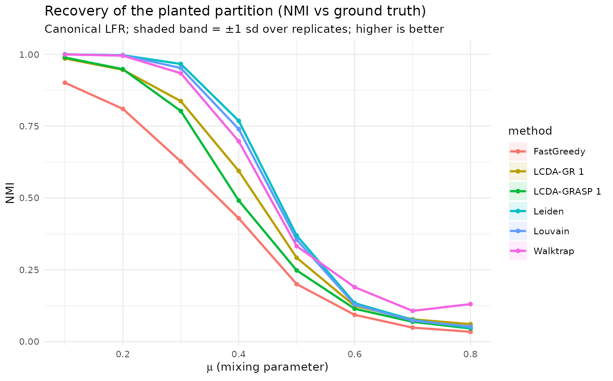
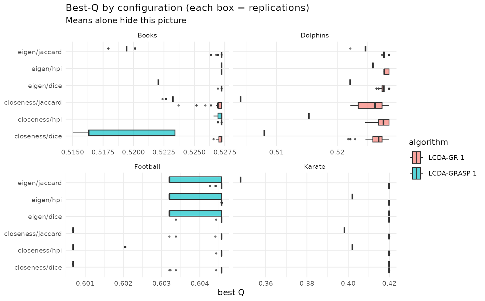
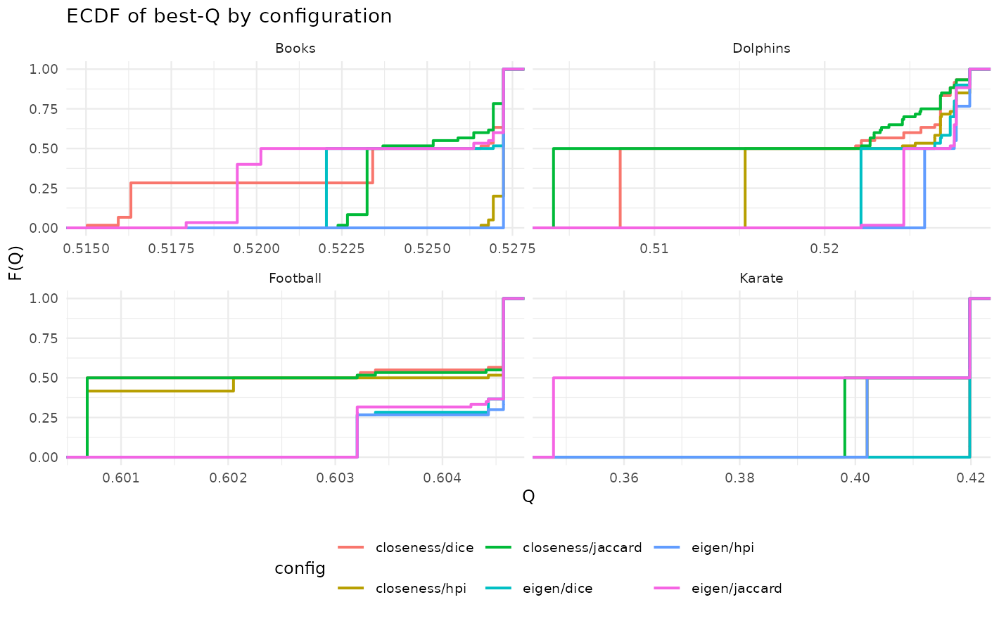
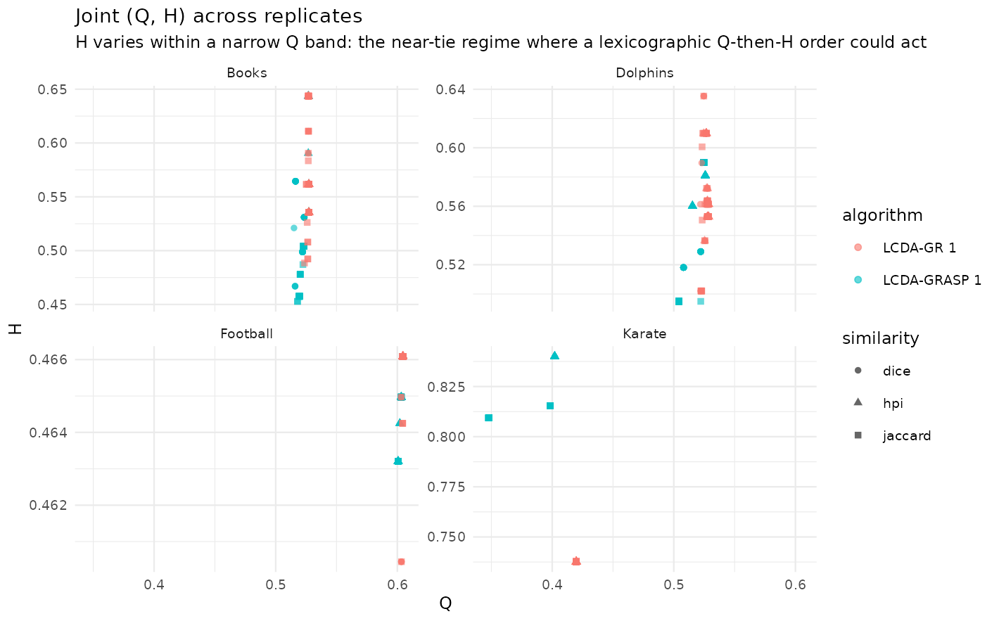
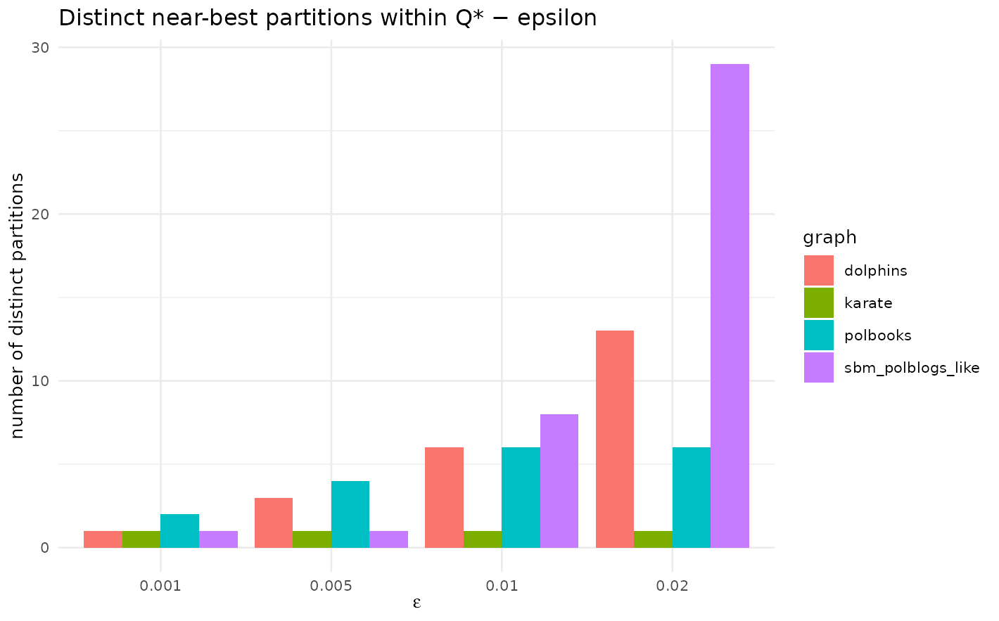

Robustness and honest limits: recovery, distributions, and degeneracy
Source:vignettes/articles/robustness-and-limits.Rmd
robustness-and-limits.RmdThe paper evaluates LCDA-GRASP/GR on five well-behaved benchmark networks. One should not conclude only from where there is data: those five networks have strong, clean community structure, and modularity is only an approximation of “good partition”. This article stresses the method along three axes that the headline tables do not show, and reports what it finds without embellishment.
The thread running through all three is a single discipline: do not trust the mean alone. Recovery degrades as communities dissolve; the per-replicate spread is wide where tables print only a point estimate; and several distinct “near-best” partitions coexist, so the one you report is somewhat arbitrary. The honest reading of the package is that LCDA-GRASP/GR is a competitive, not leading community detector, and its leader designation is valuable as a joint, community-grounded output rather than as a superior raw spreader.
1. Recovery across community-strength regimes
We sweep the mixing parameter on canonical LFR networks (Lancichinetti–Fortunato–Radicchi 2008) — from strong community structure () into the regime where the planted communities dissolve — and measure , the adjusted Rand index (ARI) and normalized mutual information (NMI) against the planted partition. alone cannot tell you whether the recovered partition is correct; ARI/NMI can.
Generated. 2026-05-31, lcdaGRASP 0.3.1, 10 reps, n=500.
- Generator: canonical LFR (Lancichinetti-Fortunato-Radicchi 2008) via networkx 3.6.1 (.venv-lfr); tau1=2.5, tau2=1.5, avg_degree=12, comm in [20,60]
- n=500 fixed; size effects not explored here (see large-scale item 1.4).
- IC simulator is pure R (item 2.9 = Rcpp kernel); MC and reps kept modest for runtime.
- Leader-utility uses top-degree as the centrality comparator (strongest single baseline in 1.9).
library(ggplot2); library(dplyr)
#>
#> Attaching package: 'dplyr'
#> The following objects are masked from 'package:stats':
#>
#> filter, lag
#> The following objects are masked from 'package:base':
#>
#> intersect, setdiff, setequal, union
quality <- d_lfr$results$quality
sm <- quality |>
dplyr::group_by(mu, method) |>
dplyr::summarise(NMI = mean(NMI), NMI_sd = sd(NMI), ARI = mean(ARI),
Q = mean(Q), .groups = "drop")
ggplot(sm, aes(mu, NMI, colour = method, fill = method)) +
geom_ribbon(aes(ymin = NMI - NMI_sd, ymax = NMI + NMI_sd), alpha = 0.12, colour = NA) +
geom_line(linewidth = 0.9) + geom_point(size = 1.3) +
labs(title = "Recovery of the planted partition (NMI vs ground truth)",
subtitle = "Canonical LFR; shaded band = ±1 sd over replicates; higher is better",
x = expression(mu~"(mixing parameter)"), y = "NMI") +
theme_minimal(base_size = 10)
#> Warning: Removed 48 rows containing missing values or values outside the scale range
#> (`geom_ribbon()`).
sm |>
dplyr::filter(mu %in% c(0.2, 0.4, 0.6)) |>
dplyr::transmute(mu, method, NMI = round(NMI, 3)) |>
tidyr::pivot_wider(names_from = mu, values_from = NMI) |>
knitr::kable(caption = "NMI vs the planted partition at low/medium/high mixing.")| method | 0.2 | 0.4 | 0.6 |
|---|---|---|---|
| FastGreedy | 0.810 | 0.429 | 0.093 |
| LCDA-GR 1 | 0.946 | 0.594 | 0.125 |
| LCDA-GRASP 1 | 0.948 | 0.491 | 0.115 |
| Leiden | 0.997 | 0.769 | 0.134 |
| Louvain | 0.997 | 0.740 | 0.129 |
| Walktrap | 0.995 | 0.697 | 0.190 |
On canonical LFR the proposed methods recover well at low mixing but
trail Leiden/Louvain — and especially
ECG (ensemble clustering, Poulin & Théberge 2019),
the strongest recovery baseline — across the sweep. The shaded band
already makes the discipline concrete: the per-replicate sd is
non-trivial, so two methods whose means cross may be indistinguishable
at a given
.
The ensemble-consensus variant lcda_ecg() closes the
recovery gap (see Reproducing the paper’s benchmark numbers and
the lcda_ecg documentation).
Leader utility across community strength
The same pool lets us ask whether the LCDA leaders are useful seeds: we compare the expected Independent-Cascade spread from the detected leaders against an equal-size top-degree seed set, as a function of .
u <- d_lfr$results$leader_utility |>
dplyr::group_by(mu) |>
dplyr::summarise(adv_vs_degree = mean(adv_vs_degree),
se = sd(adv_vs_degree) / sqrt(dplyr::n()),
adv_vs_random = mean(adv_vs_random), .groups = "drop")
ggplot(u, aes(mu, adv_vs_degree)) +
geom_hline(yintercept = 0, linetype = 2, colour = "grey50") +
geom_ribbon(aes(ymin = adv_vs_degree - se, ymax = adv_vs_degree + se), alpha = 0.15) +
geom_line(linewidth = 0.9) + geom_point(size = 1.3) +
labs(title = "Leader spreading advantage vs a top-degree seed set",
subtitle = "Above zero: LCDA leaders out-spread top-degree of the same size",
x = expression(mu), y = "IC-spread advantage (LCDA − top-degree)") +
theme_minimal(base_size = 10)The leaders always beat a random seed set, but they do not out-spread a top-degree set on LFR; any edge is confined to the strongest-community regime and inverts as grows. The leader contribution is the joint, community-grounded designation — not superior raw spreading.
2. Distributions of Q and H, not just means
Where the paper reports means and significance letters, here we draw the boxplots, ECDFs and (Q, H) scatter that those tables hide, over replications per (graph algorithm centrality similarity).
# Q on x directly (coord_flip would silently disable the facet free scale).
ggplot(res, aes(Q, config, fill = algorithm)) +
geom_boxplot(outlier.size = 0.5, alpha = 0.65, orientation = "y") +
facet_wrap(~ graph, scales = "free_x") +
labs(title = "Best-Q by configuration (each box = replications)",
subtitle = "Means alone hide this picture", y = NULL, x = "best Q") +
theme_minimal(base_size = 9)
ggplot(res, aes(Q, colour = config)) +
stat_ecdf(geom = "step", linewidth = 0.7) +
facet_wrap(~ graph, scales = "free_x") +
labs(title = "ECDF of best-Q by configuration", x = "Q", y = "F(Q)") +
theme_minimal(base_size = 9) + theme(legend.position = "bottom")
# Common Q scale (free_y), so the near-fixed Q reads as narrow vertical clouds
# instead of being auto-zoomed apart per panel.
ggplot(res, aes(Q, H, colour = algorithm, shape = similarity)) +
geom_point(alpha = 0.6, size = 1.4) +
facet_wrap(~ graph, scales = "free_y") +
labs(title = "Joint (Q, H) across replicates",
subtitle = "H varies within a narrow Q band: the near-tie regime where a lexicographic Q-then-H order could act") +
theme_minimal(base_size = 9)
d_eda$results |>
dplyr::group_by(graph, centrality, similarity) |>
dplyr::summarise(Q = mean(Q), .groups = "drop_last") |>
dplyr::slice_max(Q, n = 1) |>
dplyr::ungroup() |>
knitr::kable(digits = 4, caption = "Best centrality/similarity per network (mean Q).")| graph | centrality | similarity | Q |
|---|---|---|---|
| Books | closeness | hpi | 0.5272 |
| Books | eigen | hpi | 0.5272 |
| Dolphins | closeness | hpi | 0.5214 |
| Dolphins | eigen | hpi | 0.5270 |
| Football | closeness | hpi | 0.6027 |
| Football | eigen | hpi | 0.6042 |
| Karate | closeness | dice | 0.4198 |
| Karate | eigen | dice | 0.4198 |
HPI + eigenvector is the modal winner, matching the paper’s recommendation — but the boxplots show the margins are often within noise, and the (Q, H) clouds are nearly vertical, i.e. varies at essentially fixed . That is exactly the near-tie situation in which a lexicographic (Q, then H) objective could in principle bite. In practice it rarely does: seldom breaks a -tie, as quantified in the Pool sensitivity article. The picture reinforces the same discipline as the LFR sweep — report the distribution, because the gap between configurations is frequently smaller than the within-configuration spread.
3. Modularity degeneracy and partition multiplicity
Modularity is an approximation, and one of its known pathologies is degeneracy: many structurally distinct partitions can have within of the maximum (Good, de Montjoye & Clauset 2010). For a multi-start metaheuristic this is double-edged — lots of optima to find, but the single partition you report (and therefore the leaders you name) is somewhat arbitrary. We audit how many distinct near-best partitions LCDA-GRASP finds and their mean pairwise NMI (low NMI = high degeneracy).
knitr::kable(
dplyr::transmute(d_deg$results, graph, epsilon,
Q_star = round(Q_star, 4),
runs_in_band = n_runs_in_band,
distinct_partitions = n_distinct_partitions,
mean_NMI = round(mean_pairwise_NMI, 3)),
caption = "Distinct near-best partitions and their similarity, per network and tolerance.")| graph | epsilon | Q_star | runs_in_band | distinct_partitions | mean_NMI |
|---|---|---|---|---|---|
| karate | 0.001 | 0.4020 | 33 | 1 | 1.000 |
| karate | 0.005 | 0.4020 | 33 | 1 | 1.000 |
| karate | 0.010 | 0.4020 | 33 | 1 | 1.000 |
| karate | 0.020 | 0.4020 | 33 | 1 | 1.000 |
| dolphins | 0.001 | 0.5259 | 4 | 1 | 1.000 |
| dolphins | 0.005 | 0.5259 | 12 | 3 | 0.845 |
| dolphins | 0.010 | 0.5259 | 28 | 6 | 0.821 |
| dolphins | 0.020 | 0.5259 | 59 | 13 | 0.798 |
| polbooks | 0.001 | 0.5272 | 44 | 2 | 0.980 |
| polbooks | 0.005 | 0.5272 | 48 | 4 | 0.967 |
| polbooks | 0.010 | 0.5272 | 60 | 6 | 0.931 |
| polbooks | 0.020 | 0.5272 | 60 | 6 | 0.931 |
| sbm_polblogs_like | 0.001 | 0.2286 | 1 | 1 | NA |
| sbm_polblogs_like | 0.005 | 0.2286 | 1 | 1 | NA |
| sbm_polblogs_like | 0.010 | 0.2286 | 8 | 8 | 0.458 |
| sbm_polblogs_like | 0.020 | 0.2286 | 29 | 29 | 0.427 |
ggplot(d_deg$results, aes(factor(epsilon), n_distinct_partitions, fill = graph)) +
geom_col(position = "dodge") +
labs(title = "Distinct near-best partitions within Q* − epsilon",
x = expression(epsilon), y = "number of distinct partitions") +
theme_minimal(base_size = 10)
Even at small , several distinct partitions coexist in the top band on the larger/diffuse networks, and the mean pairwise NMI sits below 1 — so the reported leader-community configuration is one of several near-equivalent ones. This does not invalidate the method, but it bounds the interpretability claim about “named leaders”: the names can shift across seeds. Beyond the well-known resolution limit, this near-optimum degeneracy is a genuine caveat for any modularity-maximising leader assignment and is worth reporting alongside it.
Taking the three together
The same lesson recurs at every scale of the analysis. As communities weaken, recovery falls and LCDA trails the strongest baselines while remaining competitive and matching ECG-style ensembles; across replicates the configuration margins are often inside the noise; and at the top of the -landscape several partitions are statistically interchangeable, so the “named leaders” are not unique. None of this sinks the method — but it is the honest envelope around the headline numbers, and it is the reason the package reports distributions, leader-utility comparisons, and degeneracy counts rather than point estimates alone.
References
- Good, B. H., de Montjoye, Y.-A., & Clauset, A. (2010). Performance of modularity maximization in practical contexts. Phys. Rev. E, 81, 046106. doi:10.1103/PhysRevE.81.046106
- Lancichinetti, A., Fortunato, S., & Radicchi, F. (2008). Benchmark graphs for testing community detection algorithms. Phys. Rev. E, 78, 046110. doi:10.1103/PhysRevE.78.046110
- Newman, M. E. J., & Girvan, M. (2004). Finding and evaluating community structure in networks. Phys. Rev. E, 69, 026113. doi:10.1103/PhysRevE.69.026113
- Poulin, V., & Théberge, F. (2019). Ensemble clustering for graphs. Applied Network Science, 4, 51. doi:10.1007/s41109-019-0162-z ```